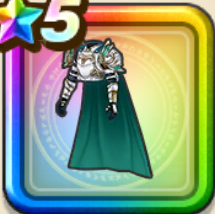

ユグノアのよろい上
攻略班 10点 / ジバリア属性耐性+5%バギ属性耐性+5%ジバリア属性耐性+5%ヒャド属性耐性+5%【晴れ】スキルの会心ダメージ+3%スキルの斬撃ダメージ+9%全属性ダメージ+5%スキルの会心ダメージ+4%
くわしい特徴
【レベル別習得スキル】 Lv1ジバリア属性耐性+5% Lv3【晴れ】スキルの会心ダメージ+3% Lv5バギ属性耐性+5% Lv8スキルの斬撃ダメージ+9% Lv10全属性ダメージ+5% Lv15スキルの会心ダメージ+4% Lv18ジバリア属性耐性+5% Lv20すばやさ+7 Lv23ヒャド属性耐性+5% Lv25守備力+5 【限界突破スキル】 1凸攻撃力+12 2凸すばやさ+12 3凸守備力+12 4凸さいだいHP+12